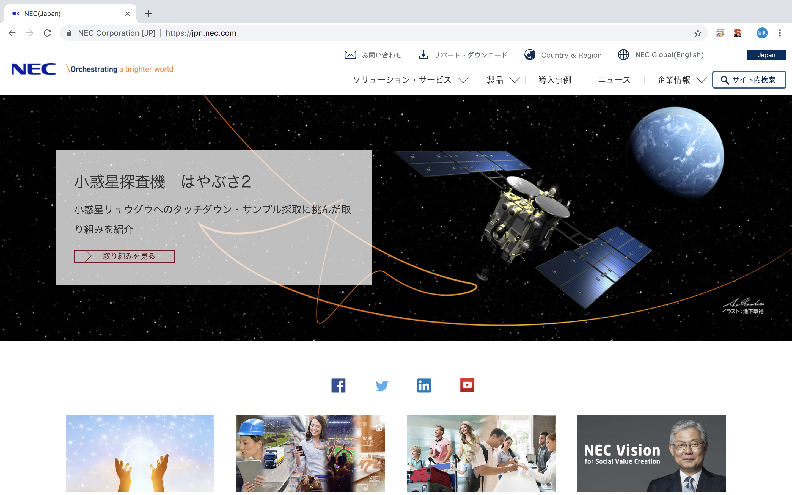

キャリア
千葉市立稲毛高等学校
(2004〜2007)
ラグビーに３年間を費やす
おかげで膝はボロボロになり、現在も苦しむ
1年C組 田中先生
2年D組 杉原先生
3年C組 宮先生
だったかな......

明治大学商学部
(2007〜2011)
1年、2年のキャンパスは明大前（京王線）
3年、4年のキャンパスは御茶ノ水（中央線）
オレンジデイズに憧れていたが、現実はバイト三昧
飲み会とカラオケの記憶がメインのダメ大学生
学んだのは美味しいビールの飲み方について

東日本旅客鉄道株式会社(JR東日本）
(2011〜2018)

日本電気株式会社(NEC)
（2019~）
資格（本当に持ってます）
- 普通自動車免許
- 漢検２級
- 第３級陸上特殊無線技士
- 動力車操縦者運転免許 甲種
マラソン戦歴
- 松島ハーフマラソン完走 1:40:10 初マラソン
- 千葉マリンマラソン完走 1:37:04
- 千葉県民マラソン 完走 1:34:52
- 仙台国際ハーフマラソン 完走 1:35:10
- 宇都宮マラソン 完走 1:31:39 ハーフ自己ベスト
- 勝田全国マラソン 完走 3:33:29 初フルマラソン
- 太田原マラソン 完走 3:30:18 フルベスト
- いすみ県民マラソン ハーフ予定
- 館山若潮マラソン フル予定